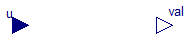

2D natural cubic interpolation spline defined with (x,y,slope) points

Parameters
| Type | Name | Default | Description |
|---|
| Real | x[:] | fill(Modelica.Constants.N_A,... | x coordinations of interpolating points |
| Real | y[:] | fill(Modelica.Constants.N_A,... | y coordinations of interpolating points |
| Real | slope[:] | fill(Modelica.Constants.N_A,... | slopes at interpolating points |
| Real | data[:, 3] | transpose({x,y,slope}) | Array of interpolating points as {x,y,slope} |
| Real | Xscale | 1 | conversion scale to SI unit of x values |
| Real | Yscale | 1 | conversion scale to SI unit of y values |
Connectors
Modelica definition
model Curve
"2D natural cubic interpolation spline defined with (x,y,slope) points"
parameter Real x[:] =
fill(Modelica.Constants.N_A,1)
"x coordinations of interpolating points";
parameter Real y[:] =
fill(Modelica.Constants.N_A,1)
"y coordinations of interpolating points";
parameter Real slope[:] =
fill(Modelica.Constants.N_A,1)
"slopes at interpolating points";
parameter Real[:,3] data =
transpose({x,y,slope})
"Array of interpolating points as {x,y,slope}";
parameter Real Xscale = 1
"conversion scale to SI unit of x values";
parameter Real Yscale = 1
"conversion scale to SI unit of y values";
Modelica.Blocks.Interfaces.RealInput u;
Modelica.Blocks.Interfaces.RealOutput val;
protected
parameter Real a[:,:] =
SplineCoefficients( data[:, 1]*Xscale,data[:, 2]*Yscale,data[:, 3]*Yscale/Xscale)
"cubic polynom coefficients of curve segments between interpolating points";
equation
val =
Spline(
data[:, 1]*Xscale,
a,
u);
end Curve;
Empirical Dependence of Two Variables
Information
Extends from Modelica.Icons.Package (Icon for standard packages).
Package Content
| Name |
Description |
 Spline Spline
|
Cubic spline interpolation function |
| SplineCoefficients
|
Cubic spline interpolation coefficients |
 Curve Curve
|
2D natural cubic interpolation spline defined with (x,y,slope) points |
Cubic spline interpolation function
Inputs
| Type | Name | Default | Description |
|---|
| Real | x[:] | | x coordinations of interpolating points |
| Real | a[:, 4] | | cubic polynom coefficients of curve segments between interpolating points |
| Real | xVal | | input value of x to calculate y value |
Outputs
| Type | Name | Description |
|---|
| Real | yVal | y value at xVal |
Revisions
author: Ondrej Vacek
Modelica definition
function Spline "Cubic spline interpolation function"
input Real[:] x "x coordinations of interpolating points"; //souradnice x souradnice uzlovych bodu
input Real[:,4] a
"cubic polynom coefficients of curve segments between interpolating points"; //parametry kubiky
input Real xVal "input value of x to calculate y value"; //vstupni hodnota
output Real yVal "y value at xVal";
// output Real outExtra;
protected
Integer index "index of segment";
Integer n "number of interpolating points";
algorithm
// Najdi interval, ve kterem se nachazi xVal
if (xVal <= x[1]) then //kdyz je hodnota xVal pred prvnim uzlovym bodem
yVal := xVal * a[1,3] + a[1,4]; //pocitam primku
else
n := size(x,1); //pocet uzlovych bodu
if (xVal>=x[n]) then //kdyz je hodnota xVal za poslednim uzlovym bodem
yVal := xVal * a[n+1,3] + a[n+1,4]; //pocitam primku
else
index := 2;
while xVal > x[index] and index < n loop
index:=index+1;
end while;
yVal := ((a[index,1]*xVal + a[index,2])*xVal + a[index,3])*xVal + a[index,4];
/*
x1:=x[index-1];
x2:=x[index];
y1:=y[index-1];
y2:=y[index];
slope1:=slope[index-1];
slope2:=slope[index];
a1:=-(-x2*slope2 - x2*slope1 + slope2*x1 + slope1*x1 + 2*y2 - 2*y1)/(x2 - x1)^3;
a2:=(-x2^2*slope2-2*x2^2*slope1-3*x2*y1+x2*slope1*x1+3*x2*y2-x2*slope2*x1-3*y1*x1+slope1*x1^2+3*y2*x1+2*slope2*x1^2)/(x2-x1)^3;
a3:=-(-slope1*x2^3-2*x2^2*slope2*x1-x2^2*slope1*x1+x2*slope2*x1^2+2*x2*slope1*x1^2+6*x2*x1*y2-6*x2*x1*y1+slope2*x1^3)/(x2-x1)^3;
a4:=(-slope1*x2^3*x1+y1*x2^3-slope2*x1^2*x2^2+slope1*x1^2*x2^2-3*y1*x2^2*x1+3*y2*x1^2*x2+slope2*x1^3*x2-y2*x1^3)/(x2-x1)^3;
yVal :=a1*(xVal)^3 + a2*(xVal)^2 + a3*(xVal) + a4;
*/
end if;
end if;
// outExtra := xVal + yVal;
end Spline;
Cubic spline interpolation coefficients
Inputs
| Type | Name | Default | Description |
|---|
| Real | x[:] | | x coordinations of interpolating points |
| Real | y[:] | | y coordinations of interpolating points |
| Real | slope[:] | | slopes at interpolating points |
Outputs
| Type | Name | Description |
|---|
| Real | a[size(x, 1) + 1, 4] | cubic polynom coefficients of curve segments between interpolating points |
Revisions
author: Ondrej Vacek
Modelica definition
function SplineCoefficients "Cubic spline interpolation coefficients"
input Real[:] x "x coordinations of interpolating points";
input Real[:] y "y coordinations of interpolating points";
input Real[:] slope "slopes at interpolating points";
output Real[size(x,1)+1,4] a
"cubic polynom coefficients of curve segments between interpolating points"; //pocet hodnot ctyrech parametru kubiky je o jeden vic nez pocet bodu
protected
Integer n "number of interpolating points";
Integer i "index of segment";
Real x1 "previos point";
Real x2 "current point";
Real y1 "previous point";
Real y2 "current point";
Real slope1 "previous point";
Real slope2 "current point";
algorithm
n := size(x,1);//pocet uzlovych bodu
for i in 2:n loop //cyklus od 2 do n
x1:=x[i-1]; //predchozi bod
x2:=x[i]; //soucasny bod
y1:=y[i-1]; //predchozi bod
y2:=y[i]; //soucasny bod
slope1:=slope[i-1]; //predchozi bod
slope2:=slope[i]; //soucasny bod
//vypocty parametru kubiky (od 2 do n) podle souradnic a smernic dvou bodu : y=a[i,4]+a[i,3]*x+a[i,2]*x^2+a[i,1]*x^3
a[i,1]:=-(-x2*slope2 - x2*slope1 + x1*slope2 + x1*slope1 + 2*y2 - 2*y1)/(x2 - x1)^3;
a[i,2]:=(-x2^2*slope2-2*x2^2*slope1-3*x2*y1+x2*slope1*x1+3*x2*y2-x2*slope2*x1-3*y1*x1+slope1*x1^2+3*y2*x1+2*slope2*x1^2)/(x2-x1)^3;
a[i,3]:=-(-slope1*x2^3-2*x2^2*slope2*x1-x2^2*slope1*x1+x2*slope2*x1^2+2*x2*slope1*x1^2+6*x2*x1*y2-6*x2*x1*y1+slope2*x1^3)/(x2-x1)^3;
a[i,4]:=(-slope1*x2^3*x1+y1*x2^3-slope2*x1^2*x2^2+slope1*x1^2*x2^2-3*y1*x2^2*x1+3*y2*x1^2*x2+slope2*x1^3*x2-y2*x1^3)/(x2-x1)^3;
end for;
a[1, :] := { 0, 0, slope[1], y[1] - x[1]*slope[1]}; //vypocet prvni sady parametru kubiky - primky
a[n+1,:] := { 0, 0, slope[n], y[n] - x[n]*slope[n]}; //vypocet posledni sady parametru kubiky - primky
end SplineCoefficients;
Automatically generated Sun Dec 07 18:19:25 2014.
 Physiolibrary.Blocks.Interpolation.Curve
Physiolibrary.Blocks.Interpolation.Curve